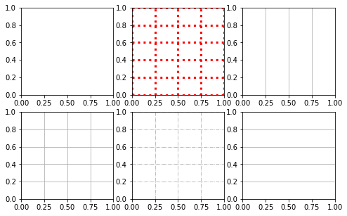
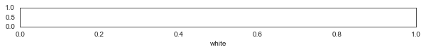
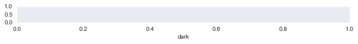
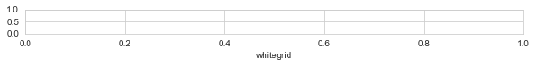
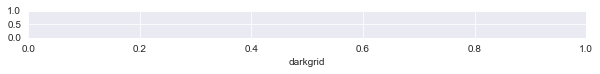
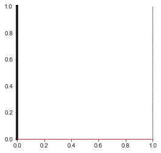
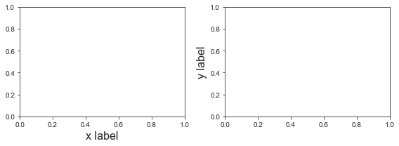
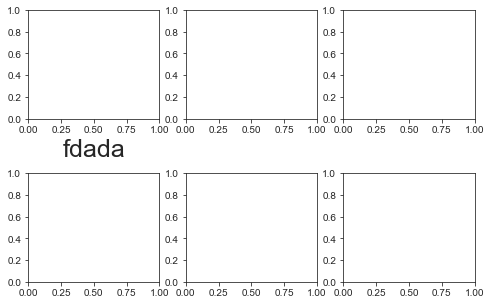

import matplotlib.pyplot as plt
import seaborn as sns
import pandas as pd
import numpy as np
# set the font of figure so the text can be edit in Adobe Illustrator
import matplotlib as mpl
mpl.rcParams['font.serif'] = 'Arial'
mpl.rcParams['pdf.fonttype'] = 42
Structure of a figure¶

single plot¶
f, ax = plt.subplots()
print(type(f),type(ax))
<class 'matplotlib.figure.Figure'> <class 'matplotlib.axes._subplots.AxesSubplot'>
sub plots¶
f, ax = plt.subplots(2, 3, figsize=(8, 5), sharey='row',squeeze=False)
ax[0, 0].plot([0, 1], [0, 1])
[<matplotlib.lines.Line2D at 0x7f9327a4ef70>]
Grid¶
Axes.grid¶
f, ax = plt.subplots(2,3, figsize=(8,5))
ax[0,0].grid(False)
ax[1,0].grid(True)
ax[0,1].grid(True,color='r',linewidth=3,linestyle=':')
ax[1,1].grid(True,linestyle='-.')
ax[0,2].grid(True,axis='x')
ax[1,2].grid(True,axis='y')

sns.set_style()¶
Style option: white, dark, whitegrid, darkgrid, ticks
for style in ['white', 'dark', 'whitegrid', 'darkgrid', 'ticks']:
sns.set_style(style)
f, ax = plt.subplots(figsize=(10,0.5))
ax.set_yticks([0,0.5,1])
ax.set_xlabel(style)




Spines¶
f, ax = plt.subplots(figsize=(4,4))
ax.spines['top'].set_visible(False)
ax.spines['bottom'].set_color('red') # Set both the edgecolor and the facecolor.
ax.spines['right'].set_linestyle(':') # Set the patch linestyle.
ax.spines['left'].set_linewidth(4) # Set the patch linewidth in points.

Axis label¶
f, ax = plt.subplots(1,2, figsize=(8,3))
ax[0].set_xlabel('x label',fontsize=16)
ax[1].set_ylabel('y label',fontsize=16)
f.tight_layout()

Title¶
f, ax = plt.subplots(2,2, figsize=(6,6),squeeze=False)
ax[0,0].set_title('title 1',fontsize=15)
ax[0,1].set_title('title 2',loc='left')
ax[1,0].set_title('title 3',pad=20)
# f.suptitle('Super Title',fontsize=20)
f.suptitle('Super Title',fontsize=20,fontweight='normal',x=0.5,y=0.98,horizontalalignment='center',verticalalignment='top')
# f.tight_layout()
Text(0.5, 0.98, 'Super Title')
Layout of subplots¶
f, ax = plt.subplots(2,3, figsize=(8,5))
ax[0,0].set_xlabel('fdada',fontsize=25)
f.subplots_adjust(hspace=0.5)
# f.tight_layout()
